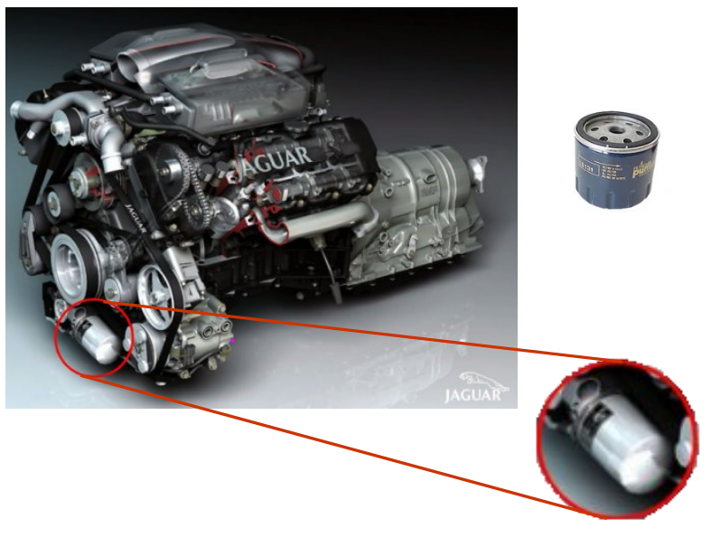
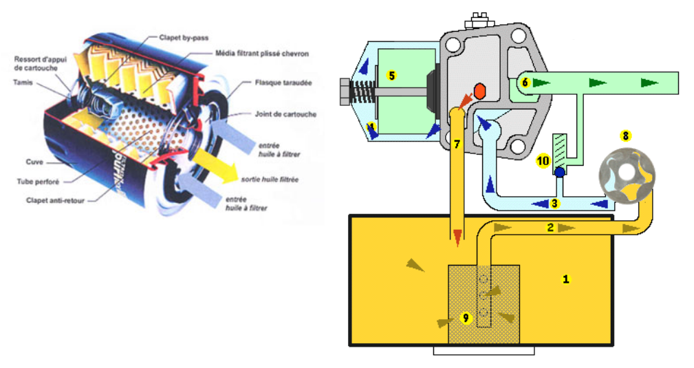
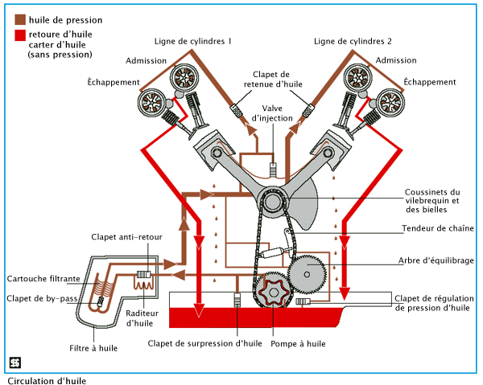

Fonction d’un filtre à huile
La clé proposée permet le démontage des filtres à huile sur les véhicules automobiles.
Le filtre à huile se situe généralement sur l'avant ou le dessous du bloc moteur sur lequel il est vissé. (exemple ci-contre)
Il permet de récupérer les impuretés produites par le fonctionnement du moteur.

Principe d’utilisation d’un filtre à huile
Environ 250 m3 d'huile traversent le filtre à huile de votre voiture en 10 000 kms.
D'ou la nécessité de remplacer votre filtre à huile à chaque vidange ou au minimum tous les ans si vous faites moins de 15 000 kms par an.
Il est l'élément indissociable du maintien de la qualité du lubrifiant.

Principe de fonctionnement d’un circuit de lubrification
Le système de lubrification du moteur a pour fonction d'apporter de l'huile de lubrification en quantité suffisante vers les organes du moteur. Il se présente sous forme d'un circuit fermé dans lequel l'huile doit assumer un grand nombre de charges.
Utilité de l’huile dans un mécanisme: 
- Lubrification de toutes les parties soumises au frottement ;
- Refroidissement des organes du moteur ;
- Protection contre la surchauffe ;
- Évacuation des dépôts et des restes de combustion et d'abrasion ;
- Protection contre la corrosion ;
- Amortissement des bruits et des vibrations ;
- Étanchéité de précision (par exemple au niveau des segments du piston).